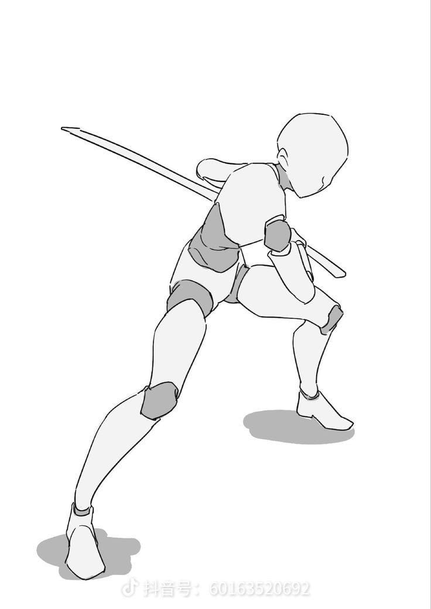
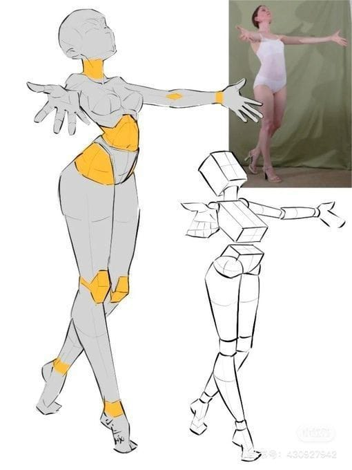
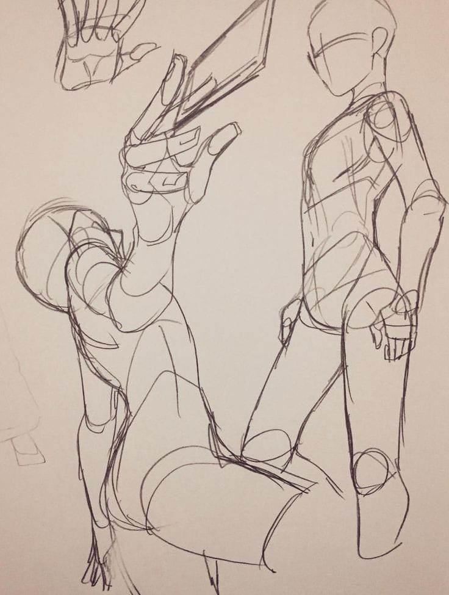
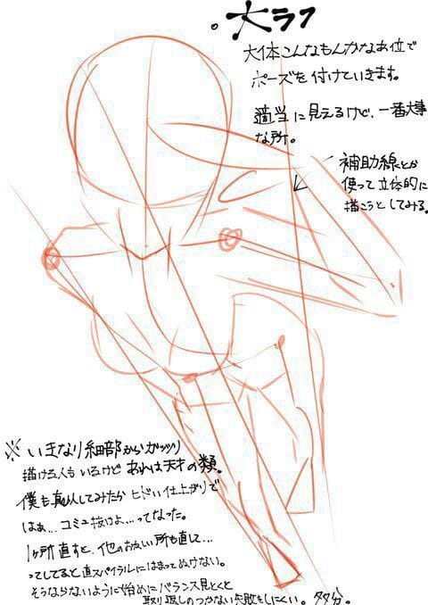
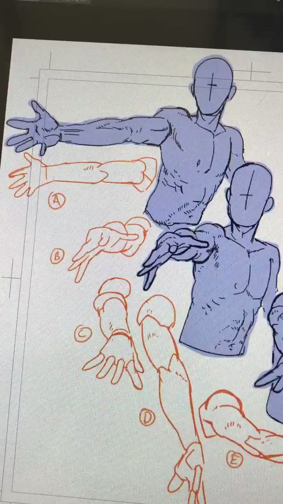
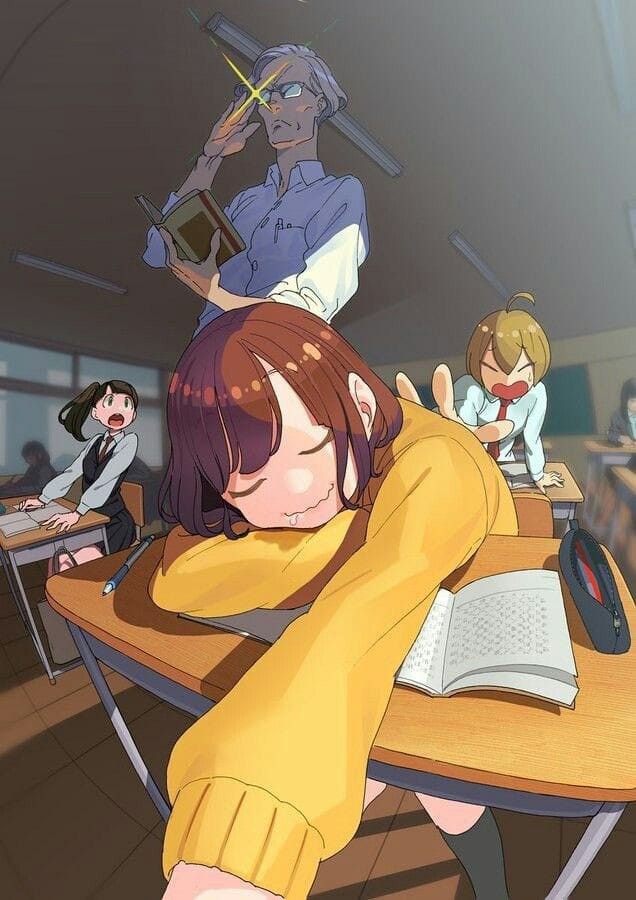

esboços de desenhos para ter inspirações e ideias de desenho
aqui você vai aprender como são feitos desenhos como esses:
ESBOÇOS
para desenhar qualquer coisa você primeiro deve resumi-lo a formas geométricas, pois ajuda a entender anatomia e poses



Veja um exemplo de antes e depois com um esboço e um desenho já finalizado porém sem pintura:

PERSPECTIVA
Para vermos algo em perspectiva temos que ter noção de algumas coisas. Uma delas é que tudo que se aproxima do ponto central de onde estamos olhando aumenta, por exemplo, uma mão mais perto da nossa visão fica maior que uma outra mão que está mais distante
Observe um exemplo


Observe que nesses desenhos a pontos que conforme se aproximam da camera, se tornam maiores, já outros quando se distanciam ficam menores
clique nessa imagem para ser direcionado/a à um vídeo explicando mais sobre perspectiva
Uma coisa importante a se preocupar num desenho é o quesito da anatomia, clique na imagem e veja uma explicação sobre anatomia e algumas dicas para que você nunca erre
Um detalhe muito importante também em uma desenho, que da "vida" a ele é pintura, portanto clique na imagem e veja como você pode aprender a pintar como um profissional"
Mãos, o maior inimigo de muitos desenhistas, mas por que mãos são tão dificeis de se desenhar? Tenho uma ótima notícia para você, por que agora você vai finalmente daciar essa dúvida e descobrir o que é tão difícil desenhar mãos
Bom, agora que você tem um vasto conhecimento desse assunto comece a praticar, e lembre-se, a prática leva a perfeição, você ainda não aprendeu a desenhar porque viu pessoas desenhando e dando dicas, você tem que por essas dicas em prática, então pratique!"